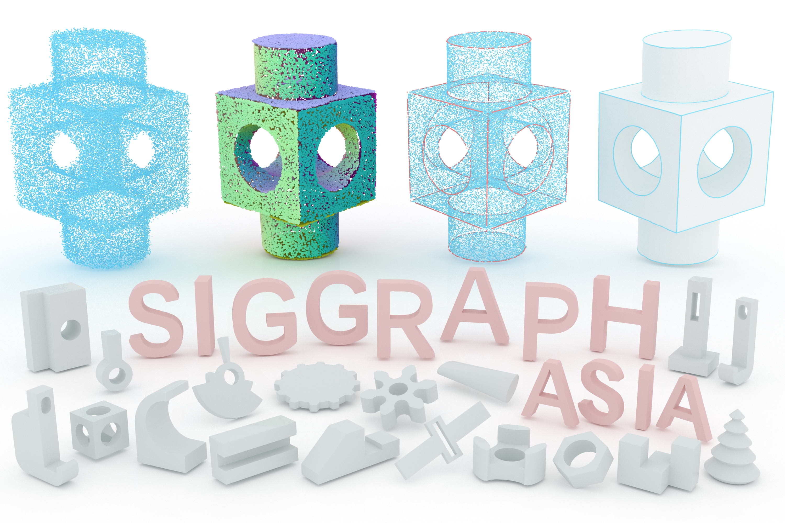
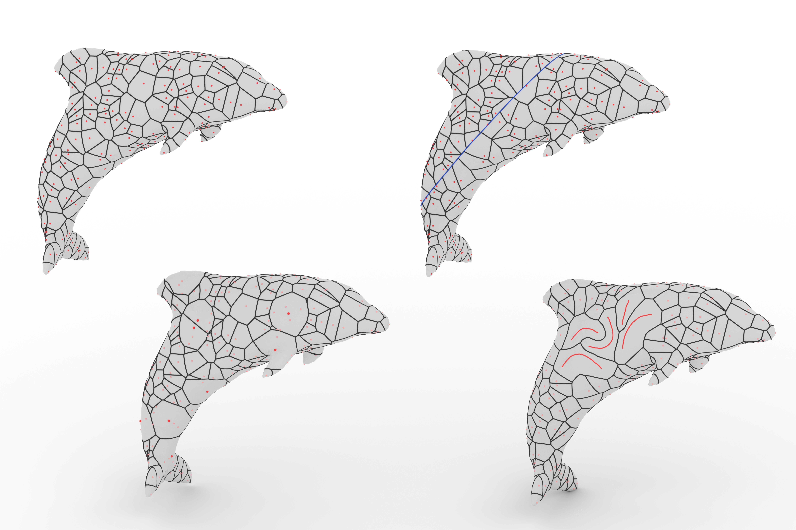
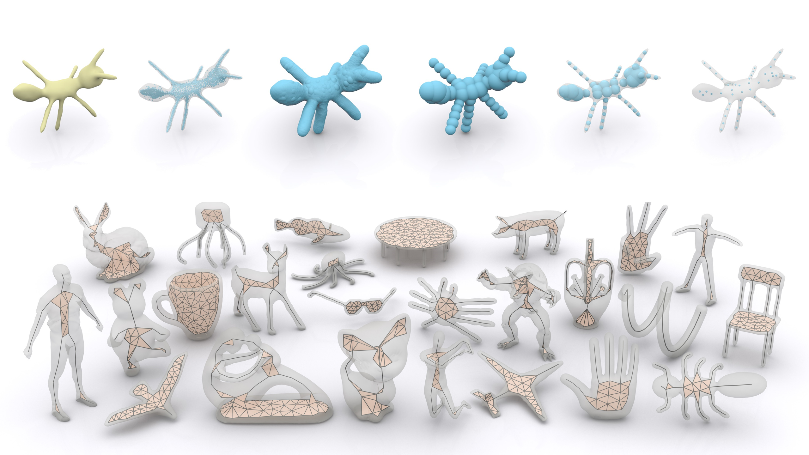
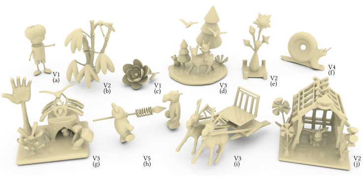
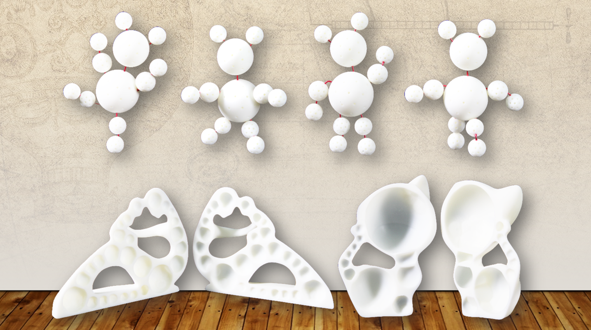

Publications
-

NEW! Globally Consistent Normal Orientation for Point Clouds by Regularizing the Winding-Number Field Conditionally Accepted to SIGGRAPH 2023 Journal Track. [Project Page] [code]
-

RFEPS: Reconstructing Feature-line Equipped Polygonal Surface ACM Transactions on Graphics. SIGGRAPH Asia 2022. [Project Page] [arxiv] [code]
-

SurfaceVoronoi: Efficiently Computing Voronoi Diagrams over Mesh Surfaces with Arbitrary Distance Solvers ACM Transactions on Graphics. SIGGRAPH Asia 2022. [arxiv] [code]
-

Coverage Axis: Inner Point Selection for 3D Shape Skeletonization
Computer Graphics Forum. Eurographics 2022. [Project Page] [arxiv] [code] -

EasyVRModeling: Easily Create 3D Models by an Immersive VR System
ACM SIGGRAPH Symposium on Interactive 3D Graphics and Games(i3D) 2022. [paper] -

Top-Down Shape Abstraction Based on Greedy Pole Selection
IEEE Transactions on Visualization and Computer Graphics. TVCG 2020. [arxiv]